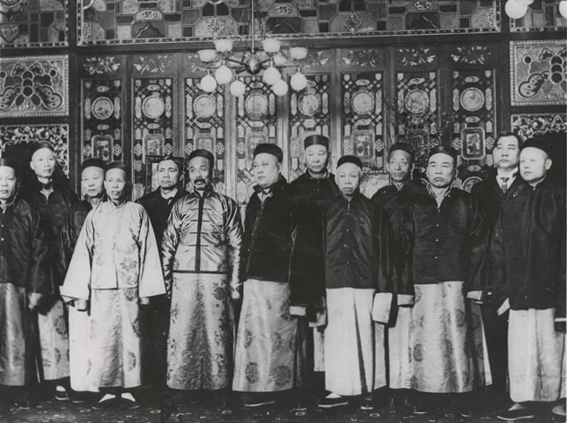

Fashion
Besides their artistic and aesthetic values, traditional Chinese clothes also carry the historical Chinese culture, philosophy, and ritual values as they change throughout several dynasties.

Hanfu
Hanfu is the traditional style of clothing worn by the Han people for all of history before the Qing Dynasty. Hanfu is traditionally composed of a paofu robe or ru jacket worn as the upper garment and a qun skirt worn as the lower garment. Hanfu, in addition to apparel, contains a variety of accessories such as headwear, footwear, belts, jewelry, yupei, and handheld fans. Han Chinese clothing has influenced the traditional clothing of many neighbouring cultures and directly lead to the development of the Japanese Kimono, Korean hanbok, and the Vietnamese ao Giao linh.